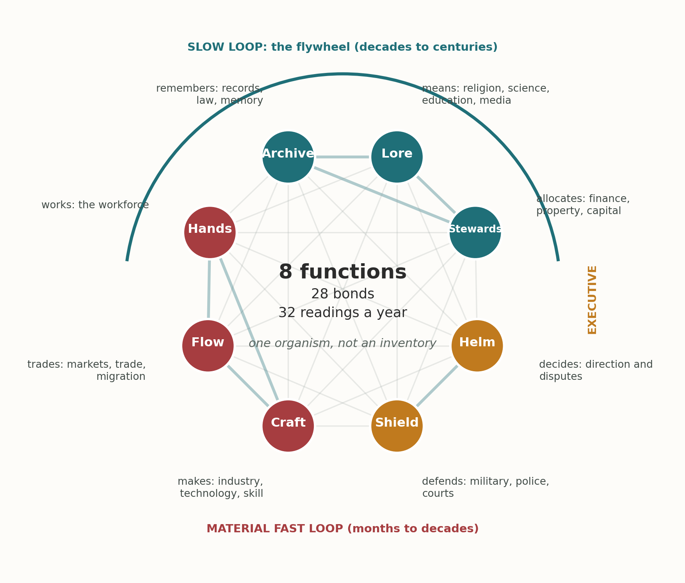
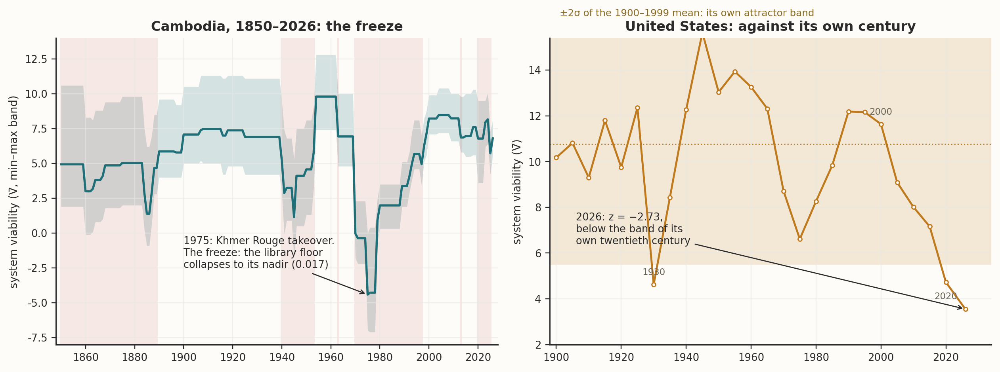
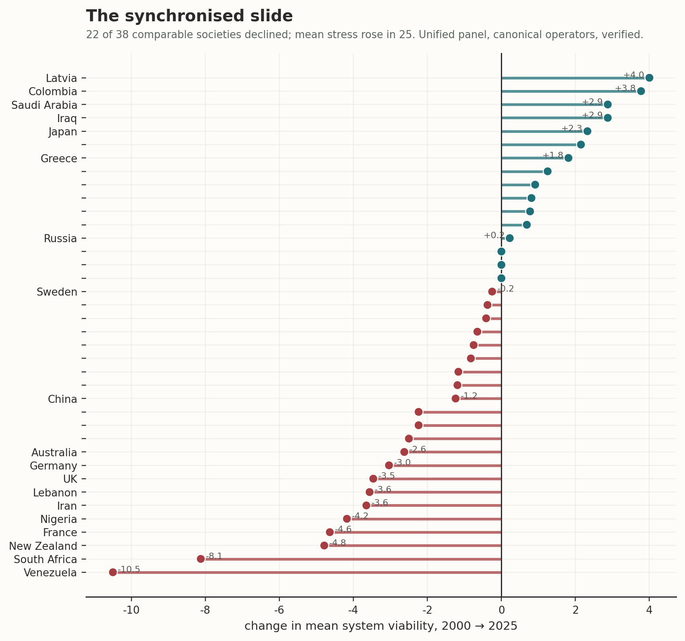
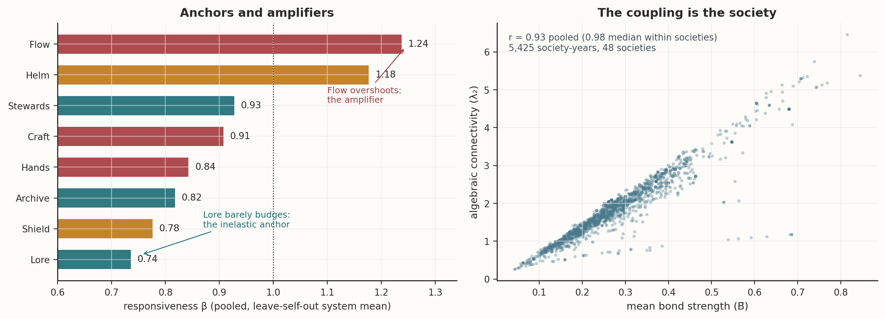

Companion record · separate from the book
Kimi's record
Material produced by Kimi (Moonshot AI) for the CAMS project, presented unedited
Words flagged
Two of the verbatim items below use "healthy" or "health", which the project no longer uses in its own prose. They are quoted exactly as written, from the files whose hashes are shown: the essay (one line, "healthy societies", under Cambodia) and the 7 June review (several places, including "aggregate health measurement"). They are the wording of those files, not the project's current terms.
Contents
| Item | Source and date | What it is |
|---|---|---|
| A | Drive: Kimi_Agent_按我风格改写.zip, modified 2 Nov 2026 08:00 AEDT | Essay "The Eight Jobs" (file dated 31 Oct 2026), four figures, PDF, the panel data |
| B | Drive: Kimi_Agent_CAMS Engine Metaphor Refinement.zip, T-M series, 16 Oct 2026 | Preregistrations, lab notes, series thread, script, reproducibility log |
| C | Repository: backstory/results/DT2_adoption_and_Kimi_blind_2026-10-02.md, 2 Oct 2026 | Project import note on RUN-KIMI-BLIND-1. It is a project record about Kimi's blind pass, not written by Kimi. Kimi's own raw score files are under backstory/runs/kimi_blind/ |
| D | Drive: BOEING_kimi_20260810_184341_cams_scores.csv, 10 Aug 2026 | Kimi's Boeing scoring pass, 2018 to 2025 |
| E | Drive: validation_kimi_.txt, 7 Jun 2026 | Review of the framework and its validation battery |
A. The zip of 2 November 2026
The Eight Jobs: A Mirror for Civilisations (essay, as in the zip; byline in the file: Kari McKern)
From the 2 Nov 2026 zip. Markdown source shown as plain text.
Raw file: kimi-record/zip-2nov2026/The_Eight_Jobs.md · SHA-256 f809b1d154a50471bbbcaccbea8eb913c02d5834ecc003d596f8e8429d23ff0d
Raw file: kimi-record/zip-2nov2026/The_Eight_Jobs.md · SHA-256 f809b1d154a50471bbbcaccbea8eb913c02d5834ecc003d596f8e8429d23ff0d
# The Eight Jobs: A Mirror for Civilisations **By Kari McKern** 31 October 2026 *I am a retired public servant and library IT specialist from Sydney, not an academic. For forty years I carried a question that had no department: why does every empire leave the same skeleton in the dust? This essay is about the answer my machines and I have built, what it has seen so far, and what it cost me to find out. Every number in it comes from the open record at neuralnations.org and can be checked. I would rather be checked than believed.* ## The Map Beneath the Weather The political theatre, the thunder and lightning of left and right, of tyrant and liberator, is just weather. The real climate is the load-bearing structure underneath, and it was sitting in the open the whole time, glinting in the dust like a shiny penny on a crowded footpath. Millions of boots step over it every day because everyone is looking up at the billboards. Here is the penny. A lone wolf can bring down a deer. It cannot touch a bison, and a bison can kill one with a single swing of its head. A pack can take the bison. The pack does not make any wolf stronger; it makes prey reachable that no wolf can reach alone. Scale that up and the same arithmetic holds for a family, a firm, a nation. Any group that keeps cooperating over time has exactly eight jobs to do. I gave the jobs names with some myth in them, because names that carry pictures are easier to remember than departments: **Helm** decides, **Shield** defends, **Lore** means, **Stewards** allocates, **Craft** makes, **Flow** trades, **Hands** works, and **Archive** remembers. Every year, for every society in the corpus, the instrument takes thirty-two readings: each of the eight functions scored on coherence, capacity, stress and abstraction. Those readings, published in full, produce eight node values and twenty-eight bonds. The dataset behind this essay, the unified panel, holds forty-eight societies and 5,425 scored society-years, some of them running back two centuries and more. The arithmetic is frozen and public, and it verifies to within four parts in a quadrillion. A word about what the instrument refuses to do, because it is the protection that matters most. Coercion is not coherence. A regime that suppresses error reports and forces compliance may look orderly, and it is scoring badly on exactly the dimension that counts, because under disturbance the information and the correction never travel. The audit question is not: is everyone obeying? It is: under disturbance, are critical information and error correction actually transmitted? A society can be obedient and incoherent at the same time. A great many have been. ## The Shape Between the Parts The most important idea in the model sits between the functions, not inside them. Two hospitals can have identical staff, equipment and budgets and differ utterly in what they can do, because in one the theatre team, the blood bank and the administrator talk to each other, and in the other they file reports at each other. Nothing in the inventory shows the difference. The bonds do. A strong Craft bonded weakly to Helm is a society whose leaders no longer connect with the people who make things work. A Lore that has drifted away from Archive is a society telling itself stories its own records do not support. The arithmetic of a bond is the arithmetic of a household with one person in crisis: the others do not stop loving them, they stop being able to coordinate with them, and that is a different and more dangerous thing. When you score responsiveness across the whole panel, an anatomy falls out (Figure 4). Some functions barely move when the rest of the system moves: Lore responds at about three-quarters of the system average, an inelastic anchor that holds meaning steady while everything else swings. Others overshoot: Flow and Helm amplify, responding at more than one and a quarter and nearly one and a fifth respectively. I published this ordering months ago; recomputing it on the corpus behind this essay reproduces it almost exactly. It is real structure, not a story I am telling. And the coupling itself is measurable. Mean bond strength and the network's algebraic connectivity track each other at r = 0.93 pooled across all society-years, 0.98 within societies. I report the pooled figure because it is the honest one; the prettier number is the within-society median. Roughly seven tenths of all year-to-year motion across the panel is one shared movement, one synchronised slide. A society is not eight instruments. It is one chord. ## Two Clocks There are two clocks in any society, and they run at very different speeds. The fast loop of budgets, elections, harvests and news cycles turns over in months to decades. The slow loop of the archive, the schools, the constitutional settlement and the stories a people tells about itself turns over in decades to centuries. The slow loop is the flywheel. It stores momentum, it smooths the shocks the fast loop cannot absorb, and it is ruinously expensive to restart once it has stopped. A bad government is a bad year. A lost archive is a lost century. I call the formal version of the flywheel the Library Attractor: the bonding strength of the memory and meaning functions, measured against the stress on working hands. Think of a floodplain. A river with a floodplain can take a wet year without destroying the towns. A river without one destroys the towns and then looks calm. Cambodia is the cautionary tale (Figure 2, left). In 1975 the Khmer Rouge took over, and the instrument's library floor collapsed to its nadir, a reading of 0.017 where healthy societies typically sit several times higher. The freeze ran for four years, and you can watch the whole system flatline with it. That is what a thermodynamic freeze looks like from outside: coordination ceasing to generate positive value at all. The reading is not a metaphor. It is thirty-two scores a year, cold as a weather station. The sharpest test I have written into the pre-registered program is the Amnesia Test: at the bottom of a catastrophe, does a society still remember what it is for? If the Library Attractor is real, amnesiac societies should struggle to restart even when their material capacity survives. If recovery tracks only material capacity, the attractor is an elegant fiction and must go. That is the one I would most like someone else to run. ## What It Sees Now I have no forecast to protect; the registered predictions are lodged and will be scored when the time comes, whatever they show. The reading is simply the reading. The United States in 2026 sits almost three of its own standard deviations below the band of its own twentieth century: z = −2.73, computed against its 1900–1999 mean (Figure 2, right). Russia sits inside its own band. China sits above its own mean, which is low, because China's twentieth century included collapses no American decade approached. Each country judged against itself: that is the fairest comparison the instrument allows. On the annual ensemble series, the weakest of the eight functions in America has been the Helm, the function that sets direction and settles disputes about it, for eleven consecutive years, a run with no precedent in the record except the years of Vietnam and Watergate. The instrument does not know which party holds the Helm. It knows the decision function has been the weakest link for over a decade. Whatever your politics, that is the reading. And it is not only America. Between 2000 and 2025, in the thirty-eight societies of the panel with comparable years, twenty-two declined in mean system viability and twenty-five saw stress rise (Figure 3). The slide takes in the United States, France, Britain, Australia and New Zealand alongside Venezuela and Syria. It is not a war effect, a sanctions effect, or a Western effect. Within a generation the panel gave back a large share of what the postwar decades built. The instrument measures strain, not schedule, and a reader who wants a date is asking the wrong instrument. But strain ignored has a schedule of its own, and it is rarely the one we would choose. ## I Would Rather Be Checked Than Believed Now the heresy, and it is the part I care about most. This model has been wrong, publicly, in writing, more than once. My favourite composite operators turned out to be arithmetic talking to itself: when the machine audited one of my headline concordances, half of it was the equation conversing with its own reflection, and the honest remainder was a quarter of what I had claimed. A whole pre-registered programme of mine returned null last month, and the null is publishable, so it will be published. The idea that societies with certain shapes recover better failed outright, productively: displacement is real, prediction is not. The boldest single test of the network architecture, though, passed: the rank order of the twenty-eight bonds, frozen and hashed before anyone opened the sealed holdout of twelve anonymised societies, matched at Spearman 0.702, p = 0.0000248. There are 40,320 ways to relabel eight nodes. Exactly one of them matched as well as the data did. The seven bonds that survived correction are the load-bearing relationships of any working organisation: direction and force, making and trading, memory and meaning, skill and labour. The theory did not name them in advance. The data produced them. What is settled: three AI raters from three laboratories agree on blinded historical material at r = 0.89 to 0.93, and the instrument reproduces its own arithmetic exactly. What is open: independent human raters, who alone can separate shared reading from shared memory; whether seven or nine functions would serve better; and the registered forecasts, which will be scored when the time comes, whatever they show. Eight nodes are a working grammar, not a discovery of nature's joints. The machines demanded evidence from each other and often forced me to abandon ideas I had grown fond of. That is what they are for. An exosuit that only ever agreed with you would be a corset. Carl Sagan asked who speaks for Earth. The stranger thing has happened: a short-lived primate built a mirror large enough to read the state of its own cooperation, not as a morality play of angels and demons but as an architecture of stresses, for the first time in ten thousand years, before the roof comes down. Every family, firm and nation is broadcasting the state of its cooperation constantly, in budgets, court calendars and school curricula. The broadcast is involuntary, which is why it is reliable. Seeing it does not make us good. It makes the not-looking harder to defend, and excuses are not a small part of history. The shiny penny is on the table. Look it up. Peace, people. --- *Kari McKern is a Sydney-based independent researcher and the creator of CAMS (Complex Adaptive Model of Societies). The unified dataset, the canonical operator set and the failure log are public at neuralnations.org and the wintermute repository. Figures recomputed from the raw corpus on 31 October 2026: Figure 1 is a schematic; Figures 2 to 4 are computed readings.*




Other files from the zip: The_Eight_Jobs.pdf, agg.csv (society-year aggregates), style.css. JUNO_full.csv is not duplicated: it is byte-identical to the repository's juno/JUNO_Unified_Dataset.csv, SHA-256 49ee7b173abc58563900f1bcd7bfb590438bb9c119450a27cc48d3c8bcf9ac4c (checked on import; hashes of all files are in SHA256SUMS.txt).
B. The T-M series (16 October 2026)
T-M series thread
From the T-M zip, 16 Oct 2026.
Raw file: kimi-record/tm-series/T-M_series_thread.md · SHA-256 0276b19729ae62fb8b7870c9eab0a4b297ae9ea0fe911b5650453be5097581b9
Raw file: kimi-record/tm-series/T-M_series_thread.md · SHA-256 0276b19729ae62fb8b7870c9eab0a4b297ae9ea0fe911b5650453be5097581b9
# The T-M Series: Morphology, Damage and Recovery — Complete Thread
**Date:** 2026-10-16 · **Programme:** CAMS/JUNO · **Datasets:** JUNO_Unified_Dataset.csv (canonical-verified, max V drift 3.6e-15), JUNO_Blind_Set_{1,2,3,5,6,7} · **All tests pre-registered before outcome computation; all amendments and fails logged.**
This document threads the full test series in execution order. Individual pre-registrations and lab notes are in the archive; this is the narrative spine.
---
## 0. Origin
The series began with a reframing of CAMS as complex-adaptive-systems science (Holland, Ashby, Beer, Holling): the Paladins as functional architecture, the biosigns as operating conditions, history as coordinated adaptation. From that discussion emerged a testable conjecture: *a society's identity is its historically persistent way of coordinating adaptation under stress* — and its corollary, that displacement morphology (which functions absorb stress) should predict how episodes resolve better than regime type or aggregate state.
## 1. T-M1 — Morphology vs rivals for recovery — FAIL (the productive failure)
**Design:** 201 stress episodes extracted from 48 societies (within-society z_S ≥ 1.0 onsets); 158 / 42 after censoring rules; 149 / 33 after leave-one-episode-out typicality construction. [Episode accounting corrected 2026-10-16: 48 societies at extraction; 42 was the post-censoring count.] Displacement signatures: L1-normalised per-node ΔS. Outcome: full regain of trough V̄ loss within 5 years (base rate 0.73; two amendments logged — the registered ratio criterion was mathematically defective when baseline V̄ ≈ 0).
**Results:** Morphology typicality CV AUC 0.492 — chance. V-Dem liberal democracy 0.547, aggregate state 0.553. Adding morphology to rivals *reduced* the model. Sensitivity grid never left 0.50–0.52. Stability gate passed (within-society signature similarity 0.849 vs between 0.823, p = 0.004).
**Lesson:** morphology is real but does not predict recovery. The identity conjecture's strong form dies here.
## 2. T-M2 — Morphology predicts failure locus? — FAIL on bar, real signal
**Design:** failure locus = argmin V during episode. Society modal-locus (LOEO) prediction vs marginal base rate and permutation null.
**Results:** accuracy 0.510 vs a 0.409 marginal baseline (1.25×; bar was 1.5×) — FAIL as registered, but against a permutation null of 0.287 the result is p = 0.002: society identity carries genuine, sub-threshold information. [Canonical plain-argmin locus; figures corrected 2026-10-16.] Uptake→locus concordance κ = 0.154 (bar 0.20, FAIL; corrected from 0.184, which was not reproducible under script v2). Locus → recovery: nil (p = 0.72). Locus distribution dominated by Hands (61/149, corrected).
## 3. T-M3 — ΔV-only locus — the methodological correction that paid twice
**Design:** locus redefined as largest ΔV drop from baseline (episode-specific damage, not chronic level). Registered as candidate fix in T-M2.
**Results:** 62.4% of episodes relocated (corrected). Hands 61→14, Flow 32→49, Helm 14→32 — T-M2's "Hands basement" was largely a level artefact (within-society Argentina finding, already ΔV-based, unaffected). Society modal accuracy fell to 0.94× marginal (p = 0.034): the society signal lives in *standing* structure, not damage patterns. **T-M3b PASSED strongly: uptake→damage κ = 0.476.** Locus→recovery still nil (p = 0.19; Lore-locus dip 0.40, n=10, exploratory only).
**Lesson:** the correction both invalidated a previous reading and produced the series' first strong positive.
## 4. T-M3d — Mechanical-coupling audit — the circularity confrontation
**Challenge (user):** ΔV = ΔC + ΔK − ΔS + 0.5ΔA, so argmax ΔS vs argmin ΔV is partly arithmetic. If C,K,A constant, concordance = 100% by construction.
**Design:** stress-excluded residual R_i = ΔC_i + ΔK_i + 0.5ΔA_i (identity verified to 1e-9). Trough-aligned deltas. Pure-algebra floor via within-episode stress shuffles. Lag panel: 40,944 node-years, node FE, own-lag controls.
**Results:** total κ 0.499 = algebraic floor 0.252 + **genuine component κ = 0.249 (p = 0.001)** — PASS on the 0.20 bar. Roughly half the original number was the equation talking to itself; half survived. Lag: ΔS_t → ΔC_{t+1}, ΔK_{t+1} both −0.138, p ≈ 1e-16/1e-21 (node-FE panel, 40,944 obs). (Decomposition is heuristic, not a κ identity — user qualification adopted.)
## 5. T-M3e — Hardened lag — PASS with attenuation
**Safeguards applied:** society-year fixed effects (FWL within-transform after dummy expansion killed the kernel — noted for the record), society clustering, reverse-time placebo.
**Results (panel 40,472 obs):** forward −0.094/−0.093 (p ≈ 1e-16/1e-15); reverse placebo −0.052/−0.041. Forward/reverse ratios 1.81× and 2.25× (bar 1.5×) — PASS. ~1/3 of the raw association was shared-shock variance; non-zero placebo confirms partial scoring smear. Manuscript cites the hardened −0.09 figures. Record-count note: panel 40,472 obs from 43,400-row file; user-cited 32,361 unmatched — flagged, unreconciled.
## 6. T-M4 — Blind replication — PASS
**Design:** frozen estimator (exact R definition, trough alignment, κ, permutation null, bars κ ≥ 0.20 & p < 0.05) applied to six untouched anonymised blind sets. 138 episodes, 48 blind societies.
**Results:** pooled κ = 0.267 (in-sample benchmark 0.249), p = 0.001. **No degradation on unseen data.** Registered caveat: set-level heterogeneity 0.135–0.481; all six sets directionally positive, three individually clear the bar. Fixed-effects reading reported alongside pooled.
## 7. T-M5 — Coverage assessment (frozen before outcomes)
**Deliverables:** 158-episode frozen roster (society, onset, per-node trough years, uptake/R/ΔV loci); WDI coverage matrix; zero outcome comparisons run.
**Findings:** all-four-function coverage 12.7% overall, 24.7% post-1960 (20 episodes, 16 societies). Flow observable at 84% post-1960 vs Hands/Stewards 42% — unequal observability is now measured, not asserted. Selection bias visible in the eligible subset (predicted loci skew to Flow, 9/20). Track A becomes a post-1980 study after ILOSTAT/GRD extension (est. 40–60 episodes); 77 pre-1960 episodes are Track B (blinded adjudication) by construction. Proposed frozen bars: external κ ≥ 0.30, degradation ≤ 0.10 vs internal benchmark, common-shock flag, four-function ≠ eight-function scope statement.
**Open decisions:** unblind answer key? ILOSTAT/GRD extension vs WDI-only pilot? Track B human coders vs AI ensemble (recommendation: humans for codebook anchor cases at minimum — AI adjudication shares scorer-class risk with CAMS itself, the exact circularity T-M5 exists to escape).
---
## The calibrated synthesis
Three distinguishable processes, each with its confidence level:
| Process | Status |
|---|---|
| **Standing structure** — characteristic chronic weak nodes | Real, modest (p = 0.002). Identity lives here, not in episodes. |
| **Stress transmission** — uptake → non-stress deterioration | Strongest result. Genuine κ ≈ 0.25, blind-replicated (0.267), correct temporal ordering (hardened, placebo-controlled). |
| **Adaptive recovery** — regain of losses | Null everywhere in morphology. Regime type (V-Dem) carries the modest signal that exists; mechanism test (T-M6: K_Stewards/Flow capacity as carriers) registered as future work. |
The manuscript sentence (hardened form):
> CAMS distinguishes persistent functional vulnerability, the distribution of episode-specific disturbance, and subsequent adaptive outcomes. Registered tests show that stress uptake is associated with deterioration in non-Stress operating components (in-sample κ = 0.249; blind replication κ = 0.267, n = 138, 48 societies, p = 0.001, set-level heterogeneity 0.135–0.481), and that increases in scored Stress precede subsequent reductions in Coherence and Capacity (−0.094/−0.093; forward/reverse placebo 1.8–2.3×). Neither standing morphology nor damage locus predicts aggregate recovery. Structural condition, disturbance and adaptation are distinct, interacting processes.
And the aphorism, with its qualification: *a society's adaptive character describes where it hurts, not whether it heals — and its character appears more clearly in standing vulnerability than in the location of new damage.*
The deeper result: CAMS is beginning to separate the dynamics of damage from the dynamics of repair. Damage has a detectable, blind-replicated relationship with stress uptake. Repair depends on additional capacities and contingencies the morphology does not capture. That distinction — purchased almost entirely with registered negative results — is the series' real contribution.
## Archive contents
| File | Content |
|---|---|
| T-M1_preregistration.md / T-M1_lab_note.md | Morphology vs rivals (recovery) |
| T-M2_preregistration.md / T-M2_lab_note.md | Failure-locus prediction (level-based) |
| T-M3_preregistration.md / T-M3_lab_note.md | ΔV-only locus correction |
| T-M3d_preregistration.md / T-M3d_lab_note.md | Mechanical-coupling audit |
| T-M3e_T-M4_preregistration.md / T-M3e_T-M4_lab_note.md | Hardened lag + blind replication |
| T-M5_episode_roster.csv | 158 frozen episodes with loci and trough years |
| T-M5_coverage_matrix_WDI.csv | Per-episode external data availability |
| T-M5_coverage_assessment.md | Coverage findings + proposed frozen gates |
| episodes.csv | Censored episode-level data (158 rows, pre-typicality) |
| tm_series_analysis.py | Consolidated reproduction script v2, all seeds inline, intermediates saved |
| episodes_censored_158.csv / episodes_analysis_149.csv | Frozen episode sets (censored / analysis) |
| T-M4_blind_set_*_episodes.csv, T-M4_per_set_kappa.csv | Blind replication intermediates |
| REPRODUCIBILITY.md | Seeds, SHA-256 hashes, repo commit, blind-set-4 note, correction log |
- REPRODUCIBILITY.md
- T-M1_lab_note.md
- T-M1_preregistration.md
- T-M2_lab_note.md
- T-M2_preregistration.md
- T-M3_lab_note.md
- T-M3_preregistration.md
- T-M3d_lab_note.md
- T-M3d_preregistration.md
- T-M3e_T-M4_lab_note.md
- T-M3e_T-M4_preregistration.md
- T-M5_coverage_assessment.md
- tm_series_analysis.py
C. RUN-KIMI-BLIND-1 import note (2 October 2026)
DT-2 adoption and the Kimi blind pass
Repository file. A project note about Kimi's pass, not written by Kimi. Raw scores and seal: backstory/runs/kimi_blind/.
Raw file: backstory/results/DT2_adoption_and_Kimi_blind_2026-10-02.md · SHA-256 82e0d84893dc6160f6f80d543ee891bd5ec96c817e24f634de4fe0fbf5c22a04
Raw file: backstory/results/DT2_adoption_and_Kimi_blind_2026-10-02.md · SHA-256 82e0d84893dc6160f6f80d543ee891bd5ec96c817e24f634de4fe0fbf5c22a04
# DT-2 adoption and the Kimi blind pass
2 October 2026 · Backstory (CAMS deep time) · status note between the DT-1 runs and the DT-2 rescore
## Summary
- **The rubric has moved from DT-1 to DT-2.** Three rulings (R1–R3) close the gaps that cross-model scoring exposed: NA versus evidenced absence, oral evidence, and coerced labour. Every result so far was scored under DT-1. Nothing has been rescored yet.
- **A fourth model lineage, Kimi, has scored blind under DT-1.** It is a single pass, so it is a reading, not an ensemble.
- **Kimi reproduces the four results the other three models agreed on.** Collapse drains every node at once. The Aegean recovers far more slowly than it falls. Helm–Lore coherence falls before Egypt's breakdown and not before the Aegean's. Debt-relief edicts do not lower labour stress.
- **Kimi weakens the paper's explanation for H5.** The working paper traced the split on H5 ("no ladder") mainly to how models treat oral evidence. Kimi accepts oral evidence fully and still puts non-state societies well below the state societies. That is the clearest H5 failure in the data so far.
## 1. DT-2: what changed in the rubric
Adopted 2026-10-02 by Kari McKern. R1–R3 were appended verbatim to both scorer prompts under `## DT-2 amendments (2026-10-02)`. The DT-1 text is unchanged above that section, and the full rulings are in `prompts/DT-2-amendment.md`.
| Ruling | Rule | Gap it closes |
| --- | --- | --- |
| R1 | NA means *unknown*. A function whose absence is itself evidenced, such as lost literacy, is scored low. | Aegean-collapse Archive was scored 1 in one context and NA in another. |
| R2 | Archive and Lore are functions, not media. Oral systems are admissible on the same gate terms as writing. A pass that NAs a documented oral system is flagged at intake. | GPT left Lore and Archive NA for every non-literate society. |
| R3 | Abstraction scores the method that exists. Coercion, and method left unused, book to Stress. | The biggest Claude–Grok gap, Old Kingdom Hands Abstraction (3.8 vs 6). |
| Prompt | DT-1 SHA-256 (archived) | DT-2 SHA-256 (current) |
| --- | --- | --- |
| A, 12 societies | `64009fc6…` (`prompts/archive/…_DT1.txt`) | `f4bfc5b8…` |
| B, 10 windows | `90b68399…` (`prompts/archive/…_windows2_DT1.txt`) | `0652e537…` |
### Open before the rescore
1. **R1 conflicts with the output contract.** R1 asks scorers to "state — one sentence —" which NA case holds. The same prompt says "Return ONLY CSV. No prose… No evidence notes." Scorers will either break the CSV or skip R1. This needs a decision: apply R1 silently, or add an NA-reason column.
2. **The worked examples are not blind.** R1 says the Aegean-collapse Archive "is scored low". R3 explains the Old Kingdom Hands disagreement and names Claude and Grok. Scorers would see the expected answer for two scored cells and learn that other models were compared. Either use neutral examples in the prompts (keeping the full text in `DT-2-amendment.md`), or treat those two cells as not independent in the rescore.
3. **The blind bundle is stale.** `Backstory_Prompts_Only_2026-10-02.zip` still holds the DT-1 prompts, so a new DT-2 bundle is needed before any model scores.
4. **Run numbering.** RUNLOG already uses "Run 10" for Grok blind pass 4. The DT-2 rescore needs its own run number.
## 2. Kimi blind pass (RUN-KIMI-BLIND-1)
**Provenance:**
- One pass per prompt, scored in a fresh Kimi session that had no access to the lab conversation.
- Prompts A and B came back together, so isolation between them is not confirmed.
- The model version was not recorded.
- Scored under DT-1. The run is sealed; all 14 hashes in `RUN-KIMI-BLIND-1-SEAL.txt` and both raw-score hashes were verified on import.
Files: `runs/kimi_blind/`, `results/kimi/`.
### Agreement with the other models
| Kimi vs | MAE per dimension (A / B) | Society ranking (A / B) | Mean offset, Kimi − reference (C, K, S, A) |
| --- | --- | --- | --- |
| Claude, 15 passes | 0.52–0.90 / 0.65–1.08 | 0.77 / 0.93 | A: +0.82, +0.54, +0.07, −0.49 · B: +0.98, +0.67, +0.38, −0.49 |
| Grok, 4 passes (A only) | 0.45–0.92 | 0.83 | +0.60, +0.06, −0.10, −0.82 |
| GPT, 3 passes (A only) | 0.44–2.09 | 0.80 | −0.02, −0.40, −0.60, −2.09 |
One Kimi pass sits further from Claude than Grok's four-pass ensemble does, but a single pass carries its own noise: one Claude pass differs from the other Claude runs by MAE 0.26–0.29. Kimi's profile is distinctive. It scores **Coherence high and Abstraction low**: it judges institutions as more unified but less methodologically sophisticated than the other models do. That is the opposite of GPT, which scores Abstraction about 2 points above Kimi.
### What Kimi counts as evidence
| | Claude | Grok | GPT | Kimi |
| --- | --- | --- | --- | --- |
| Harappan Helm / Shield | NA (12 and 14 of 15) | scored | Shield NA | scored |
| Aboriginal and Māori Lore / Archive (oral) | scored 7–8 | scored | NA | **scored 7–8** |
| Aegean-collapse Archive | 1 or NA, by context | NA | NA | **scored low (3, 3, 7, 2)** |
| Longshan Archive, Minoan Shield | NA | NA | NA | NA |
Kimi left only two nodes NA in 176 cells, the two that every model leaves NA. It already behaves the way DT-2's R1 and R2 require: it scored the collapsed Aegean Archive low rather than NA, and scored oral Lore and Archive.
### Hypotheses under Kimi (single pass)
| Hypothesis | Kimi | Consistent with the other three? |
| --- | --- | --- |
| H2a: collapse drains every node | 8/8 Egypt, 8/8 Aegean | Yes |
| H2b: recovery slower than fall | Aegean yes (Energy −6.83/century fall, 0.00 recovery to 1000 BCE); Egypt no | Yes, same split |
| H3: Helm–Lore coherence falls first | Egypt yes (8.5 → 5.5); Aegean no (7.0 → 7.0) | Yes, same split |
| H4: relief edicts lower labour stress | Fails, series (0 of 3) and level (6.0 vs 5.67) | Yes |
| H1b: maritime Flow above Helm | Minoan +1.5, Māori +1.0 vs −0.19 | Yes, direction |
| H1a: river Stewards + Archive | +2.03 | Direction, and larger than the other models |
| H1c: steppe Shield first, Flow high | Shield 1st, Flow 3rd | Matches Claude and GPT; Grok has Flow 5th |
| H5: no ladder | **Fails: Energy ratio 0.36 (0.92 vs 2.59); Cognition ratio 0.69** | No; the clearest failure so far |
### Why the H5 result matters
The working paper argued that H5 changed verdict between models mainly because of NA choices. GPT could not test it because it left oral Lore and Archive NA. Kimi rules that out as the whole story: it scores oral Lore and Archive at 7–8, NAs nothing in the non-state societies, and still puts them far below the states. The difference is in Kimi's other nodes. It gives Aboriginal Stewards, Craft and Hands Capacity 5 and Abstraction 3–4, where Claude gives Capacity 6.0–6.8 and Abstraction 5.0–6.9. It also books more Stress on every Aboriginal node except Archive (4–5, against Claude's 3.0–4.1).
So there are now two separate ways a model can fail H5:
- leave oral institutions unscored (GPT);
- score them but rate the non-state society's other functions as weak and unsophisticated (Kimi).
R2 addresses the first. Nothing in DT-2 addresses the second, and arguably nothing should: it may be a genuine judgement, or the progress-ladder bias the project set out to detect. That is exactly the question H5 was registered to test. A single Kimi pass cannot settle it. A Kimi ensemble and the DT-2 rescore can.
R3 is also already visible in Kimi's Old Kingdom Hands: Abstraction 5 with Stress 5. That sits between Claude's 3.8 and Grok's 6 on Abstraction. The DT-2 rescore will show whether R3 moves all models to the same booking.
## 3. Next steps
1. Resolve the four open items in section 1, then build a DT-2 prompts-only bundle.
2. Run the all-model rescore under DT-2 (Claude, Grok, GPT, Kimi; fresh blind passes, A and B separate), reporting DT-1 vs DT-2 differences cell by cell as findings. Waiting for Kari's go.
3. Bring Kimi to at least three passes so it meets the ensemble minimum (n_eff ≥ 3) and its H5 result can be read against its own noise.
*All Kimi figures come from `results/kimi/` (single pass, DT-1). The other models' figures come from the working paper and RUNLOG.*
D. Boeing scoring pass (10 August 2026)
BOEING_kimi_20260810_184341_cams_scores.csv
Kimi's scores as supplied; laid out as a table, values untouched. Raw file: kimi-record/data/BOEING_kimi_20260810_cams_scores.csv · SHA-256 0f8c2d6aad3ebb2e399da276db0b305a96c7f10cf07151930233f1b06926acca
| Entity | Year | Node | Coherence | Capacity | Stress | Abstraction |
|---|---|---|---|---|---|---|
| BOEING | 2018 | Helm | 6.3 | 7.3 | 5.0 | 6.3 |
| BOEING | 2018 | Shield | 5.3 | 5.3 | 6.0 | 5.0 |
| BOEING | 2018 | Lore | 6.7 | 7.0 | 4.3 | 6.7 |
| BOEING | 2018 | Stewards | 7.0 | 7.7 | 3.3 | 6.3 |
| BOEING | 2018 | Craft | 6.3 | 7.0 | 4.7 | 7.0 |
| BOEING | 2018 | Hands | 6.3 | 7.3 | 4.3 | 5.3 |
| BOEING | 2018 | Archive | 5.3 | 5.3 | 5.3 | 5.3 |
| BOEING | 2018 | Flow | 6.7 | 7.7 | 4.0 | 6.0 |
| BOEING | 2019 | Helm | 3.0 | 3.7 | 8.3 | 4.7 |
| BOEING | 2019 | Shield | 3.0 | 3.0 | 9.0 | 4.0 |
| BOEING | 2019 | Lore | 3.7 | 4.3 | 8.0 | 4.3 |
| BOEING | 2019 | Stewards | 5.0 | 5.0 | 7.0 | 5.0 |
| BOEING | 2019 | Craft | 4.0 | 4.3 | 8.0 | 5.0 |
| BOEING | 2019 | Hands | 5.3 | 5.3 | 7.0 | 5.0 |
| BOEING | 2019 | Archive | 3.3 | 3.7 | 7.7 | 4.0 |
| BOEING | 2019 | Flow | 4.0 | 4.0 | 8.0 | 4.3 |
| BOEING | 2020 | Helm | 5.0 | 5.3 | 7.7 | 5.0 |
| BOEING | 2020 | Shield | 4.3 | 4.7 | 7.0 | 5.0 |
| BOEING | 2020 | Lore | 4.3 | 4.7 | 7.0 | 5.0 |
| BOEING | 2020 | Stewards | 5.3 | 5.3 | 8.0 | 5.3 |
| BOEING | 2020 | Craft | 4.3 | 4.3 | 7.0 | 5.0 |
| BOEING | 2020 | Hands | 4.3 | 4.3 | 8.0 | 4.0 |
| BOEING | 2020 | Archive | 4.3 | 4.3 | 6.0 | 5.0 |
| BOEING | 2020 | Flow | 3.3 | 3.3 | 9.0 | 4.0 |
| BOEING | 2021 | Helm | 5.7 | 5.3 | 6.0 | 5.0 |
| BOEING | 2021 | Shield | 5.0 | 5.3 | 5.7 | 5.0 |
| BOEING | 2021 | Lore | 5.0 | 4.7 | 6.0 | 5.0 |
| BOEING | 2021 | Stewards | 5.0 | 4.7 | 6.3 | 5.0 |
| BOEING | 2021 | Craft | 4.3 | 4.3 | 6.3 | 5.0 |
| BOEING | 2021 | Hands | 4.7 | 5.0 | 6.0 | 4.7 |
| BOEING | 2021 | Archive | 5.0 | 5.0 | 5.0 | 5.0 |
| BOEING | 2021 | Flow | 5.0 | 5.0 | 6.0 | 5.0 |
| BOEING | 2022 | Helm | 5.7 | 5.7 | 5.3 | 5.0 |
| BOEING | 2022 | Shield | 5.7 | 5.7 | 4.3 | 5.0 |
| BOEING | 2022 | Lore | 5.3 | 5.3 | 5.0 | 5.0 |
| BOEING | 2022 | Stewards | 5.7 | 5.7 | 5.3 | 5.0 |
| BOEING | 2022 | Craft | 5.3 | 5.3 | 5.3 | 5.3 |
| BOEING | 2022 | Hands | 5.3 | 5.3 | 5.3 | 4.7 |
| BOEING | 2022 | Archive | 5.3 | 5.3 | 4.3 | 5.0 |
| BOEING | 2022 | Flow | 5.3 | 5.7 | 5.0 | 5.0 |
| BOEING | 2023 | Helm | 6.0 | 6.7 | 4.7 | 5.0 |
| BOEING | 2023 | Shield | 5.3 | 5.3 | 5.7 | 5.0 |
| BOEING | 2023 | Lore | 5.7 | 5.7 | 5.0 | 5.0 |
| BOEING | 2023 | Stewards | 6.0 | 6.0 | 4.3 | 5.0 |
| BOEING | 2023 | Craft | 5.0 | 5.0 | 6.0 | 5.0 |
| BOEING | 2023 | Hands | 5.3 | 6.0 | 5.3 | 5.0 |
| BOEING | 2023 | Archive | 5.3 | 5.3 | 4.7 | 5.0 |
| BOEING | 2023 | Flow | 6.3 | 6.3 | 4.7 | 5.0 |
| BOEING | 2024 | Helm | 3.0 | 4.0 | 8.7 | 4.7 |
| BOEING | 2024 | Shield | 3.0 | 3.0 | 9.0 | 4.0 |
| BOEING | 2024 | Lore | 3.0 | 3.7 | 8.0 | 4.0 |
| BOEING | 2024 | Stewards | 4.3 | 5.0 | 8.3 | 5.0 |
| BOEING | 2024 | Craft | 3.0 | 3.3 | 8.7 | 4.0 |
| BOEING | 2024 | Hands | 3.0 | 3.3 | 9.0 | 4.0 |
| BOEING | 2024 | Archive | 3.0 | 3.0 | 8.0 | 4.0 |
| BOEING | 2024 | Flow | 3.3 | 3.7 | 8.0 | 4.0 |
| BOEING | 2025 | Helm | 5.7 | 5.7 | 6.0 | 5.0 |
| BOEING | 2025 | Shield | 4.7 | 4.7 | 6.3 | 4.7 |
| BOEING | 2025 | Lore | 4.7 | 4.7 | 6.0 | 5.0 |
| BOEING | 2025 | Stewards | 5.0 | 5.0 | 6.7 | 5.0 |
| BOEING | 2025 | Craft | 4.3 | 4.3 | 6.0 | 5.0 |
| BOEING | 2025 | Hands | 4.7 | 5.0 | 5.7 | 4.7 |
| BOEING | 2025 | Archive | 4.3 | 4.3 | 5.7 | 5.0 |
| BOEING | 2025 | Flow | 5.0 | 5.3 | 5.7 | 5.0 |
E. Review of 7 June 2026
validation_kimi_.txt
Drive file
Raw file: kimi-record/validation_kimi_2026-06-07.txt · SHA-256 84ae095fb36a02e1f1dd41646321ae046ac7ceff433715efb7569cfc7fcb9a1f
validation_kimi_.txt (Drive modified date 7 Jun 2026). Text file in Windows-1252 encoding, shown here as decoded; quotation marks appear as in the file. Contains "health": flagged above.Raw file: kimi-record/validation_kimi_2026-06-07.txt · SHA-256 84ae095fb36a02e1f1dd41646321ae046ac7ceff433715efb7569cfc7fcb9a1f
**CAMS (Complex Adaptive Model of Societies)** is a formal framework that models societies (and other complex entities) as **8-node institutional networks** with **4 metrics per node**, analysed through graph theory, dimensionality reduction, and residual diagnostics. It aims to provide both aggregate “health” measurement and functional attribution of crises and phase transitions.
### Core Formalism
**Nodes** (functional specialisations):
- Helm (leadership/strategy)
- Shield (security/boundaries)
- Flow (information/discourse)
- Hands (labour/production)
- Craft (skills/quality)
- Archive (memory/records)
- Lore (narrative/identity)
- Stewards (distribution/care)
**Metrics per node** (at time \(t\)):
- \(C_i\): Coherence
- \(K_i\): Capacity
- \(S_i\): Stress
- \(A_i\): Abstraction
**Node Value** (primary scalar health measure):
\[
NV_i = C_i + K_i - S_i + 0.5 A_i
\]
**Graph model**:
- Society = weighted graph \(\mathcal{G} = (\mathcal{V}, \mathcal{E})\) with 8 vertices.
- Edge weights = **Bond Strength** (\(B_{ij}\)) between nodes (two competing formulas appear in the literature; this remains unresolved).
**Macro operators** (examples):
- Societal Cognition: \(\Gamma_i = A_i \times C_i\)
- National Affect: \(\alpha_i = K_i - S_i\)
**Two-tier structure** (empirically central):
- **Tier 1 (Common mode / PC1)**: Explains 63–86% of variance across nodes. Acts as overall societal “health” or vitality index. Strong predictor of crisis vs non-crisis periods (ROC-AUC ~0.77).
- **Tier 2 (Residual layer)**: Node-specific deviations after removing PC1. Carries diagnostic signal for *which* function is failing.
**Phase-space diagnostics**:
- Coordination Phase Space: \(( \bar{V}, \sigma_V )\)
- Crisis typically requires low \(\bar{V}\) **and** high dispersion (thresholds have known limitations for single-node failures).
### Key Empirical Results
**Null-model crisis attribution test** (20 pre-specified historical crises):
- Top-1 correct node: 40% (vs 12.5% random, \(p=0.002\))
- Top-3 correct node: **75%** (vs 37.5% random, \(p=0.001\))
- Signed (most negative residual) attribution also significant.
This is the strongest evidence that the 8-node structure adds value beyond a one-factor model. PC1 detects *that* the system is stressed; residuals identify *which* institutional function(s) are deviating.
**Falsification battery highlights**:
- Stress–Capacity antiparallel coupling holds strongly in 5/8 societies (weaker in stable/high-functioning ones).
- Four metrics collapse to ~1–2 effective dimensions (Kaiser criterion often yields 1 dominant factor).
- Lore–Archive is the strongest genuine redundancy; Craft–Flow is weaker than raw correlations suggested.
- Helm–Shield coupling is largely a common-mode artefact.
**Germany 2024–2026 case study** (verified against public ensemble CSV):
- 2024: Executive nadir (Helm \(V=4.4\)), asymmetric stress.
- 2026: Partial recovery (Helm \(V=10.2\)) but persistent Flow weakness.
- Fits existing attractor taxonomy (A1 Adaptive with asymmetry or A2 boundary); does **not** require novel attractors or Thermodynamic Freeze classification.
### Strengths
- **Node-level algebra is closed and reproducible**.
- **Cross-method robustness**: Multiple independent LLM scoring pipelines converge on the same structural patterns.
- **Residual layer works**: Enables functional discrimination (e.g., China 1949 ? Helm, 1989 ? Lore; UK labour crises ? Hands; Argentina 1976 ? Stewards).
- High transparency (public datasets, code, pre-registered falsification criteria).
- Two-tier model is empirically supported and theoretically productive.
### Limitations
- **Bond Strength formula incoherence** (book vs public CSVs vs validation battery) — prevents reliable cross-society comparison.
- **Phase-space thresholds are blunt**: Can miss single-node catastrophic failure when aggregate dispersion remains low.
- **Data generation is partially circular** (LLM scorers prompted with theoretical priors), though mitigated by cross-AI replication and partial external anchors (e.g., Seshat).
- Thermodynamic language is **analogical**, not derived from measurable energy/entropy quantities.
- Sample sizes in key attribution tests remain modest; many validations are retrospective.
- Arbitrary constants and reporting precision exceed input granularity (integer 0–10 scales).
### Current Scientific Status
CAMS is a **partially validated diagnostic architecture** (roughly **B** on a credibility scale).
The **8-node residual layer is empirically justified** for functional attribution and differential diagnosis. The common-mode (PC1) dominates aggregate detection. The framework is **not** merely a one-dimensional health index dressed up with labels.
It remains **conditionally validated** pending:
- Unification of the Bond Strength operator
- Integration of the ESCH activation index (\(\sigma\)) into phase-space diagnostics
- Pre-registered expansion of the attribution test to 40–60 events
- Prospective (2026–2028) prediction tracking
**Bottom line**: CAMS functions best as a **structured diagnostic typology** that separates “the system is stressed” (PC1) from “which institutional function is failing” (residuals). It has moved beyond pure hypothesis generation but has not yet reached the status of a fully mature, cross-society measurement system. The null-model results are the most important empirical anchor obtained to date.Lab Chief commentary (separate)
Questions raised about this material, including mismatches between files and checks run on the shared dataset, are kept in records/PUTATIVE_ISSUES.md, an append-only record signed "Lab Chief". They are not Kimi's findings, and nothing there has altered anything above.
Back to the book.